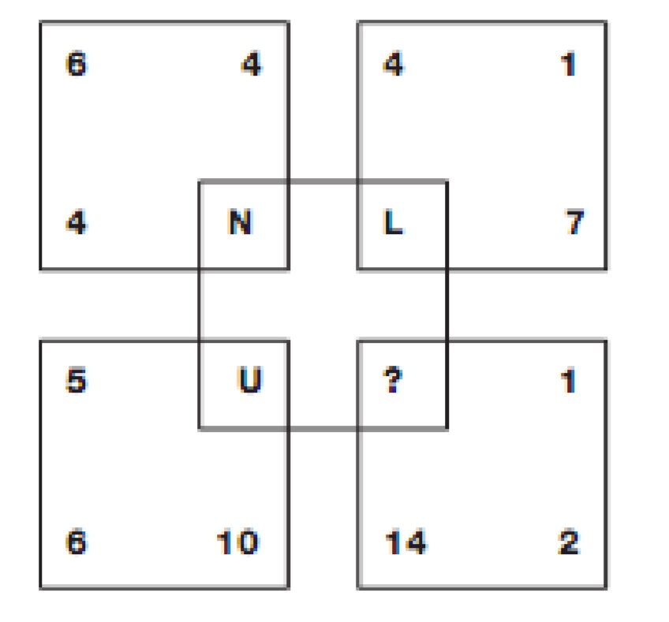
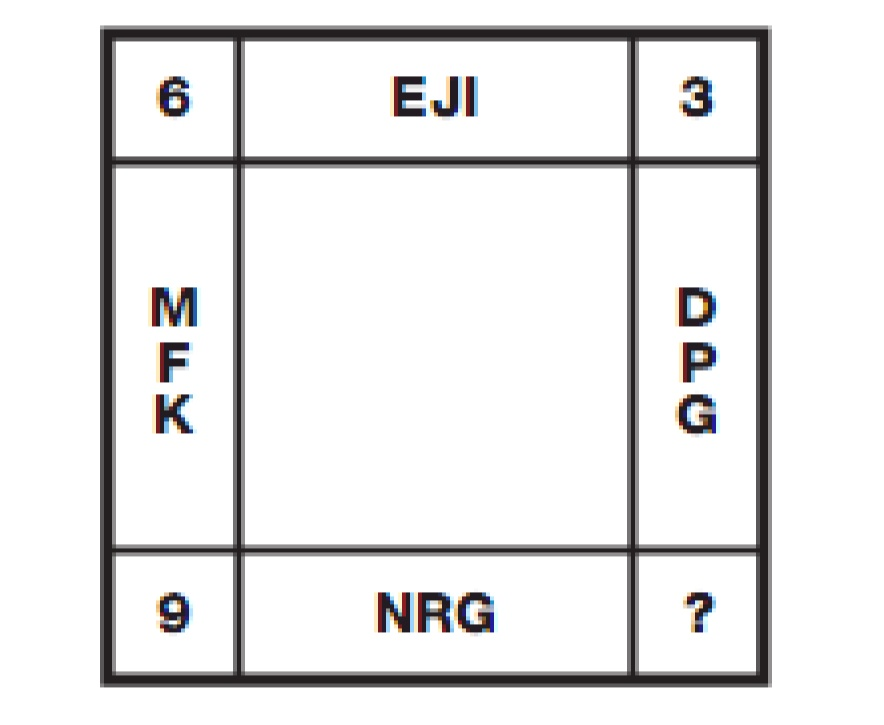
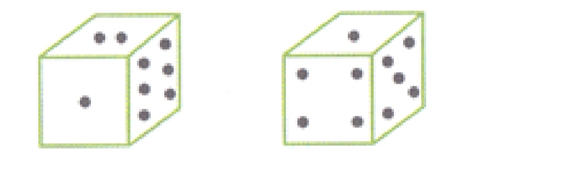
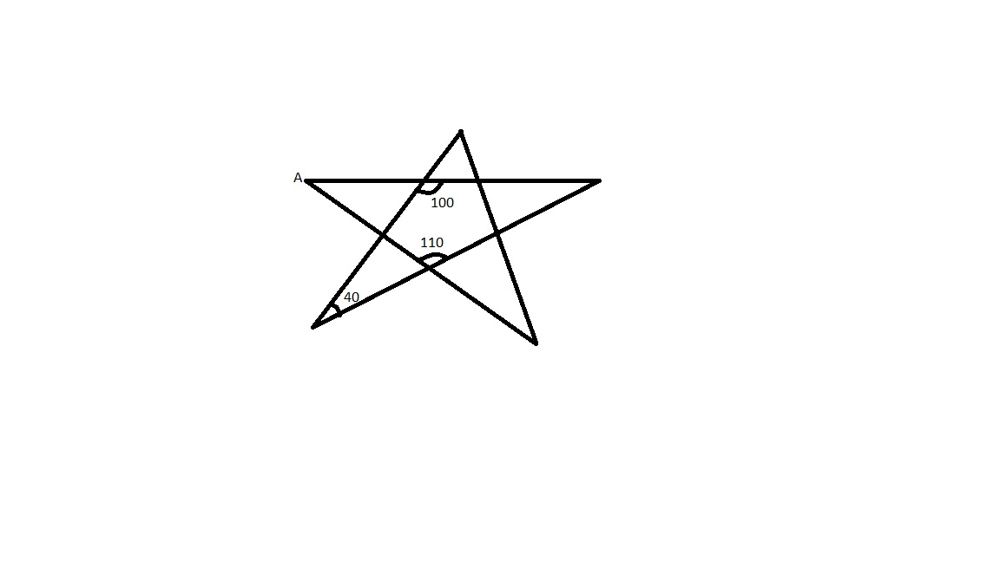

Pointing to a person, a man said to a women, “his mother is the only daughter of your father.” How was the women related to the person?
) In a family, there are six members A, B, C, D, E and F. A and B are a married couple, A being the male member. D is the only son of C, who is the brother of A. E is the sister of D. B is the daughter-inlaw of F, whose husband has died. How is E related to C?
If Z = 52 and ACT =48, then BAT will be equal to
If signs + and - are interchanged and also 4 and 8 are interchanged, then find correct choice
583 is related to 293 in same way as 488 is related to __
In a game of whist George partnered Mary, while Ted had to select a partner from the below options. Whom did he choose?
Four working ladies A, B, C and D are sitting around a table. (i) A sits opposite to the cook. (ii)B sits on the right side of the beautician. (iii) teacher is on the left side of the accountant. (iv) D sits opposite to C. (v) C is to the right of the accountant. What are the occupations of A and B?
Rectangular tiles each of size 70 cm by 30 cm must be laid horizontally on a rectangular floor of size 110 cm by 130 cm, such that the tiles do not overlap. A tile can be placed in any orientation so long as its edges are parallel to the edges of the floor. No tile should overshoot any edge of the floor. The maximum number of tiles that can be accommodated on the floor is
A boy started from his home. After walking for 5 km towards east, he turned to his right and walked for 8 km. Then he again turned to his right and walked for10 km.. In which direction was he from his house?
Which letter replaces the question mark? 
Which number replaces the question mark? 
Water image of P R A I S E D 9 7 4 3 D E V O T E
A cube is coloured red on one face, green on the opposite face, yellow on another face and blue on a face adjacent to the yellow face. The other two faces are left uncoloured. It is then cut in to 125 smaller cubes of equal size. How many cubes are coloured blue on one face, red or green on another face and have four uncoloured faces?
All the surfaces of the dice contain different numbers in the form of dots. Consider both the figures of dice and tell how many dots are present on the face opposite to the face with four dots? 
Among five friends, Garima is younger than Nidhi but elder than Latika. Latika is younger than Beena and Megha. Beena is elder than Nidhi but younger than Megha. Who is ranked fourth in the ascending order of age?
Amita, Babita, Chinki, Deepa, Priya and Fatima are standing in a row. Babita is between Fatima and Deepa. Priya is between Amita and Chinki. Amita stands next to neither Fatima nor Deepa. Chinki does not stand next to Deepa. Fatima is between which of the following pair of persons?
In the following question two statements are given followed by two conclusions numbered I, II. You have to take the given statements to be true even if they seem to be at variance from the
commonly known facts and then decide which of the given conclusions logically follows from the given statements disregarding commonly known facts. Statements: All fruits are plant products. All mangoes are fruits. Conclusions:
I. All mangoes are plant products II.
Some fruits are mangoes
The figure (i) shows the folding of the sheet of a paper along the dotted lines and figure (ii) shows that a punch is made on the folded sheet. If hence the sheet is unfolded, which of the option figures (A),(B) ,(C) ,(D) would show the unfolded form?

In the words given below, choose the one that comes first, when arranged in alphabetical order as in dictionary.
What comes next?
BEH , KNQ , TWZ , ?